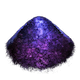
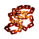
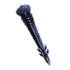
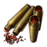
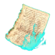
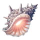
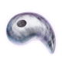
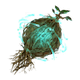
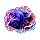

Proof of Hero

Evil Bone

Dragon Fang

Void Dust

Fool's Chain

Deadly Poisonous Needle

Mystic Spinal Fluid

Stake of Wailing Night

Mystic Gunpowder

Seed of Yggdrasil

Ghost Lanturn

Octuplet Crystal

Serpent Jewel

Phoenix Feather
Eternal Gear

Forbidden Page
Homunculus Baby

Meteor Horseshoe

Great Knight Medal

Shell of Reminiscense

Refined Magatama

Eternal Ice

Giant's Ring

Aurora Steel

Soundless Bell

Arrowhead of Malice

Crown of Silvery Light

Divine Leyline Spiritron
Claw of Chaos

Heard of the Foreign God

Dragon's Reverse Scale

Spirit Root

Warhorse's Young Horn

Bloodstone Tear

Black Beast Grease

Lamp of Evil-Sealing

Scarab of Wisdom
Fruit of Eternity

Primordial Lanugo

Cursed Beast Gallstone

Mysterious Divine Wine

Reactor Core of Dawn

Tsukumo Mirror

Egg of Truth